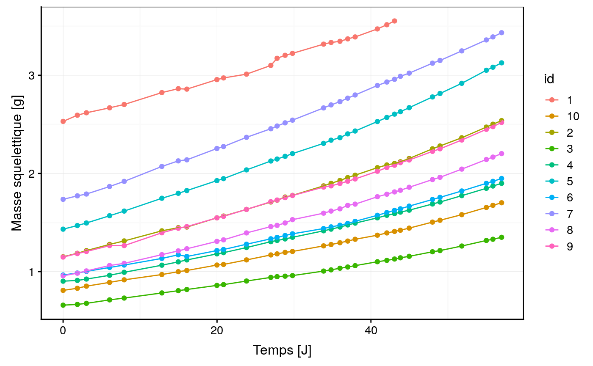

Calcul de la croissance à partir de la masse squelettique
Source:vignettes/growth_rate_french.Rmd
growth_rate_french.RmdSciViews::R
#> ── Attaching packages ─────────────────────────────────────────────────────────────────────────────────────── SciViews::R 1.1.0 ──
#> ✔ SciViews 1.1.0 ✔ purrr 0.3.2
#> ✔ chart 1.3.0 ✔ readr 1.3.1
#> ✔ flow 1.0.0 ✔ tidyr 0.8.3
#> ✔ data.io 1.2.2 ✔ tibble 2.1.1
#> ✔ svMisc 1.1.0 ✔ ggplot2 3.1.1
#> ✔ forcats 0.4.0 ✔ tidyverse 1.2.1
#> ✔ stringr 1.4.0 ✔ lattice 0.20.38
#> ✔ dplyr 0.8.0.1 ✔ MASS 7.3.51.3
#> ── Conflicts ──────────────────────────────────────────────────────────────────────────────────────────── tidyverse_conflicts() ──
#> ✖ dplyr::filter() masks stats::filter()
#> ✖ dplyr::lag() masks stats::lag()
#> ✖ dplyr::select() masks MASS::select()Introduction
La croissance des coraux peut être déterminée à partir de la masse squelettique (obtenue par conversion de la masse immergée (Jokiel, Maragos, and Franzisket 1978)).
Sipkema et al. (2006) ont mis en évidence plusieurs modèles de croissace sur différentes espèces d’éponges. Ces modèles semblent être également valable pour les coraux dont le modèle linéaire ou encore le modèle exponentiel (Osinga et al. 2011).
Le premier modèle est le modèle de croissance linéaire suivant l’équation :
\[X_t = X_0 + kt\]
avec \(X_t\) étant la masse au temps t, \(X_0\) la masse initial au temps 0, \(k\) la constante de croissance linéaire et \(t\) le temps. Si la masse des coraux est monitorée en gramme et le temps en jour, nous aurons une constante exprimé en \(g/jour\). Le taux de croissance peut être obtenu via l’équation suivante :
\[k = \frac{X_t - X_0}{t - t_0}\]
Il s’agit simplement de la pente de la droite. En partant de ce modèle de croissance linéaire, il est également courant de trouver le taux de croissance standardisé par la masse initiale avec la formule suivante :
\[k = \frac{\frac{(X_t - X_0)}{X_0}}{t - t_0} \times 100\]
Le taux de croissance sera cette fois ci exprimé \(\%/Jour\).
Un second modèle est le modèle de croissance exponentielle suivant l’équation suivante :
\[X_t = X_0 \times e^{bt}\]
avec \(X_t\) étant la masse au temps t, \(X_0\) la masse initial au temps 0, \(b\) la constante de croissance exponentielle et \(t\) le temps. Le taux de croissance \(b\) peut être obtenu via l’équation suivante :
\[ln(X_t) = ln(X_0 \times e^{bt})\\ ln(X_t) = ln(X_0) + bt \\ ln(X_t) - ln(X_0) = bt\\ \frac{ln(X_t) - ln(X_0)}{t}= b \\ \frac{ ln( \frac{X_t}{X_0})}{t} = b\]
Le taux de croissance peut également être exprimé en \(\%/Jour\) via l’équation suivante :
\[\frac{ ln( \frac{X_t}{X_0})}{t} \times 100\]
Les trois taux de croissance obtenus ne sont de ce fait pas du tout comparable.
Osinga et son équipe (2011) émettent l’hypothèse que les espèces branchues vont avoir un développement de type exponentiel alors que les espèce encroutante vont avoir une croissance linéaire.
Partons d’un exemple fictif pour illustrer ces deux situations, avec un organisme de 1 grammes avec un taux de croissance linéaire et exponentiel similaire de 0.1.
w_ini <- 1
coef <- 0.1
example <- tibble::tibble(
temps = c(0:8, 0:8),
mod = c(rep("lin", 9), rep("expo", 9)),
masse = dplyr::case_when(mod == "lin" ~ w_ini + (coef*temps),
mod == "expo" ~ w_ini*exp(coef*temps)))
chart::chart(example, masse~temps %col=% mod) +
ggplot2::geom_point() +
ggplot2::geom_line() +
ggplot2::labs( color = "Modèle")
Ce graphique démontre que les deux coefficients ne sont pas comparable.
Fonction
Le calcul des différents taux de croissance peut être réalisé à l’aide de la fonction suivante :
growth_rate <- function(skw_t, skw_ini, date_t, date_ini = 0,
method = "exponential") {
# implemented method
met <- c("exponential", "linear", "linear_std")
# check method
if(!any(met %in% method))
stop("the method is not implemented. see the help page")
# method
if (method == "exponential") {
gr <- (log(skw_t/skw_ini)/(date_t - date_ini))*100
} else if (method == "linear") {
gr <- (skw_t/skw_ini)/(date_t - date_ini)
} else if (method == "linear_std") {
gr <- (((skw_t/skw_ini)/skw_ini)/(date_t - date_ini))*100
}
gr
}Cette fonction peut facilement être mis à jour avec de nouvelles formules du taux de croissance. Cette fonction se retrouve au sein du package coral.growth
growth_rate(skw_t = 1.2, skw_ini = 1,
date_t = 7, date_ini = 0, method = "exponential")
#> [1] 2.604594
growth_rate(skw_t = 1.2, skw_ini = 1,
date_t = 7, date_ini = 0, method = "linear")
#> [1] 0.1714286
growth_rate(skw_t = 1.2, skw_ini = 1,
date_t = 7, date_ini = 0, method = "linear_std")
#> [1] 17.14286
testthat::expect_error(growth_rate(skw_t = 1.2, skw_ini = 1,
date_t = 7, date_ini = 0, method = "expo"))But
- Quel est le type de croissance le plus adapté pour des boutures de Seriatopora hystrix.
- Est il plus intéressant de déterminer le taux de croissance entre deux points de messures succésifs ou bien depuis la première mesure de la bouture.
Application sur le jeu de donnée coral_growth
Description du mode opératoire
10 boutures de Seriatopora hystrix ont été monitoré durant une période de 57 jours. La masse squelettique est obtenue via la masse immergée.
cg %>.%
mutate(.,
skw = skeleton_weight(buoyant_weight = weight, S = salinity,
T = temperature),
skw_log = log(skw)) -> cg
chart(cg, skw ~ date %col=% id) +
geom_point() +
geom_line() +
labs(y = "Masse squelettique [g]", x = "Temps [J]")
Croissance exponentielle ou linéaire
id_select <- "5"
date_select <- 40
cg %>.%
filter(., id == id_select) -> cg_red
cg_red %>.%
filter(., date <= date_select) -> cg_trainPrennons l’individu 5 afin d’étudier le croissance de cet organisme. Sa masse squelettique varie entre 1.43 et 3.13. Un jeu de données d’apprentissage va être réalisée contenant 2/3 des premières observations de croissance. Les observations supplémentaires vont être employées afin de valider les modèles.
Si la croissance suit un modèle exponentiel il est possible de linéariser les observations avec la transformation mathématique logarithmique
chart(cg_train, skw ~ date) +
geom_point() +
geom_line() +
labs(y = "Masse squelettique [g]", x = "Temps [J]") -> a
chart(cg_train, skw_log ~ date) +
geom_point() +
geom_line() +
labs(y = "Logarithme de la asse squelettique", x = "Temps [J]") -> b
combine_charts(list(a,b))
lm1 <- lm(data = cg_train, skw ~ date)
coef1 <- lm1$coefficients[2]
lm2 <- lm(data = cg_train, skw_log ~ date)
coef2 <- lm2$coefficients[2]Le taux de croissance pour le modèle exponentielle est de 0.03 \(g/J\) alors qu’il est de 1.4 \(%/J\)
dt <- tibble(date = seq(from = min(cg_red$date), to = max(cg_red$date) + 20))
dt$y <- min(cg_red$skw) + coef1*dt$date
dt$y1 <- min(cg_red$skw) * exp(coef2*dt$date)
chart(cg_red, skw ~ date) +
geom_point() +
geom_line(f_aes(y ~ date), data = dt) +
geom_line(f_aes(y1 ~ date), data = dt, color = "red") +
geom_vline(xintercept = date_select, linetype = "dashed", color = "blue") +
geom_label(aes(x = date_select/2, y = max(cg$skw)*1.10, label = "Set d'apprentissage")) +
geom_label(aes(x = date_select + date_select/2, y = max(cg$skw)*1.10, label = "Set de test")) +
labs(y = "Masse squelettique [g]", x = "Temps [J]")
Il semble que la croissance pour des boutures de masses comprises entre 1.43 et 3.13 tend à être exponentielle et non linéaire.
La croissance exponentielle ne respecte pas parfaitement la croissance de la bouture sélectionnée (bouture : 5)
Taux de croissance variable ou constant au cours du temps
Le point initial servant de référence pour déterminer le taux de croissance doit il etre le point initiale des mesures ou bien la mesure précédente. Deux possibilités sont envisagées et exprimées via les deux équations ci-dessous.
- équation en partant du point de croissance initiale (courbe noire):
\[\frac{ ln( \frac{X_t}{X_0})}{t - t_0} \times 100\]
- équation en partant du point de croissance précédent (courbe rouge):
\[\frac{ ln( \frac{X_t}{X_{t-1}})}{t - t_{t-1}} \times 100\]
cg_red %>.%
mutate(.,
skw_ini = first(skw),
skw_ini1 = lag(skw),
date_ini1 = lag(date),
gr = growth_rate(skw_t = skw, skw_ini = skw_ini,
date_t = date,date_ini = 0,
method = "exponential"),
gr1 = growth_rate(skw_t = skw, skw_ini = skw_ini1,
date_t = date,date_ini = date_ini1,
method = "exponential")) -> cg_redLe grapihque ci-dessous nous montre que les variations du taux de croissance via la seconde équation (ligne rouge sur le graphique) sont plus forte que sur la première équation.
chart(cg_red, gr ~ date) +
geom_point() +
geom_line() +
geom_point( f_aes(gr1 ~ date), color = "red") +
geom_line( f_aes(gr1 ~ date), color = "red") +
labs(y = "Taux de croissance exponentiel [%/J]", x = "Temps [J]")
#> Warning: Removed 1 rows containing missing values (geom_point).
#> Warning: Removed 1 rows containing missing values (geom_path).
#> Warning: Removed 1 rows containing missing values (geom_point).
#> Warning: Removed 1 rows containing missing values (geom_path).
Bibliographie
Jokiel, Paul L., JE Maragos, and L Franzisket. 1978. “Coral growth: buoyant weight technique.” In Coral Reefs: Research Methods, edited by Bernan Associates, 541. October. UNESCO.
Osinga, Ronald, Miriam Schutter, Ben Griffioen, René H Wijffels, Johan A J Verreth, Shai Shafir, Stéphane Henard, Maura Taruffi, Claudia Gili, and Silvia Lavorano. 2011. “The biology and economics of coral growth.” Marine Biotechnology (New York, N.Y.) 13 (4). Springer-Verlag: 658–71. https://doi.org/10.1007/s10126-011-9382-7.
Sipkema, Detmer, Nejla A.M. Yosef, Marcin Adamczewski, Ronald Osinga, Dominick Mendola, Johannes Tramper, and René H. Wijffels. 2006. “Hypothesized Kinetic Models for Describing the Growth of Globular and Encrusting Demosponges.” Marine Biotechnology 8 (1): 40–51. https://doi.org/10.1007/s10126-005-5002-8.